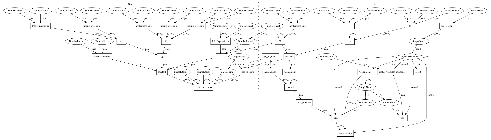

535c4e184f1faa9ced58d2ae6fdbbfc824172e86,testing/spatial_transformer_test.py,ResamplerTest,test_resampler_3d_circular_linear_correctness,#ResamplerTest#,36
Before Change
self.assertAllClose([[[1],[3]],[[13],[10]]],out_value)
def test_resampler_3d_circular_linear_correctness(self):
input=self.get_3d_input1()
grid=tf.constant([[[.25,.25-2,.25-4],[.25+4,.75+8,0.25]],[[0.75,0.25,0.25],[0.25,0.25,0.75]]],dtype=tf.float32)
resampler=ResamplerLayer(boundary="CIRCULAR")
out=resampler(input,grid)
with self.test_session() as sess:
sess.run(tf.global_variables_initializer())
out_value = sess.run(out)
self.assertAllClose([[[2.75],[3.75]],[[12.75],[11.25]]],out_value)
def test_resampler_3d_circular_nearest_correctness(self):
input=self.get_3d_input1()
grid=tf.constant([[[.25,.25-2,.25-4],[.25+4,.75+8,0.25]],[[0.75,0.25,0.25],[0.25,0.25,0.75]]],dtype=tf.float32)
resampler=ResamplerLayer(boundary="CIRCULAR",interpolation="NEAREST")
After Change
interpolation="NEAREST",
boundary="REPLICATE",
expected_value=[[[1],[3]],[[13],[10]]])
def test_resampler_3d_circular_linear_correctness(self):
self._test_correctness(input=self.get_3d_input1(),
grid=tf.constant([[[.25,.25+2,.25+3],[.25-2,.75-2,.25-3]],[[.75+2,.25-2,.25-3],[.25+2,.25-2,.75+3]]],dtype=tf.float32),
interpolation="LINEAR",
boundary="CIRCULAR",
expected_value=[[[2.75],[3.75]],[[12.75],[11.25]]])
def test_resampler_3d_circular_nearest_correctness(self):
self._test_correctness(input=self.get_3d_input1(),
grid=tf.constant([[[.25,.25+2,.25+3],[.25-2,.75-2,.25-3]],[[.75+4,.25-6,.25-6],[.25+2,.25-4,.75+9]]],dtype=tf.float32),
interpolation="NEAREST",
In pattern: SUPERPATTERN
Frequency: 3
Non-data size: 33
Instances
Project Name: NifTK/NiftyNet
Commit Name: 535c4e184f1faa9ced58d2ae6fdbbfc824172e86
Time: 2017-06-18
Author: eli.gibson@gmail.com
File Name: testing/spatial_transformer_test.py
Class Name: ResamplerTest
Method Name: test_resampler_3d_circular_linear_correctness
Project Name: NifTK/NiftyNet
Commit Name: 535c4e184f1faa9ced58d2ae6fdbbfc824172e86
Time: 2017-06-18
Author: eli.gibson@gmail.com
File Name: testing/spatial_transformer_test.py
Class Name: ResamplerTest
Method Name: test_resampler_3d_circular_linear_correctness
Project Name: NifTK/NiftyNet
Commit Name: d741cd57d4777b0506e000b773be26171e18a5ae
Time: 2017-06-15
Author: eli.gibson@gmail.com
File Name: testing/spatial_transformer_test.py
Class Name: ResamplerTest
Method Name: test_resampler_3d_circular_nearest_correctness
Project Name: NifTK/NiftyNet
Commit Name: 535c4e184f1faa9ced58d2ae6fdbbfc824172e86
Time: 2017-06-18
Author: eli.gibson@gmail.com
File Name: testing/spatial_transformer_test.py
Class Name: ResamplerTest
Method Name: test_resampler_3d_circular_nearest_correctness